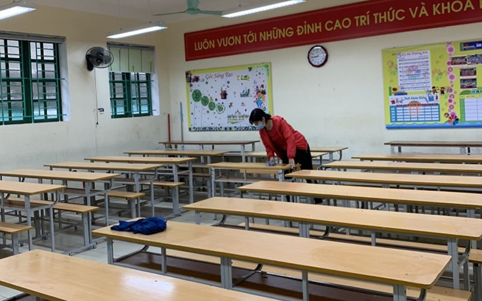

Học sinh một số khối lớp ở Thái Bình trở lại học sau kỳ nghỉ chống dịch

Cán bộ, giáo viên trường THCS Kỳ Bá (TP Thái Bình) tổ chức tổng vệ sinh lớp học, sẵn sàng đón học sinh khối lớp 9 đến trường.
Ngày 21-2, nhiều trường học trên địa bàn tỉnh Thái Bình đồng loạt tổ chức tổng vệ sinh và gấp rút triển khai các biện pháp bảo đảm an toàn cho học sinh một số khối lớp trở lại trường vào đầu tuần (ngày 22-2).
Đây là động thái mới nhất của UBND tỉnh Thái Bình sau hơn 20 ngày cho học sinh các cấp học tạm dừng đến trường do ảnh hưởng của dịch bệnh. Tuy nhiên, từ ngày mai (22-2), địa phương này cho học sinh cuối cấp học (lớp 9, lớp 12) và đội tuyển học sinh giỏi trường THPT Chuyên Thái Bình trở lại học tập. Các khối lớp còn lại tiếp tục ở nhà học trực tuyến, bên cạnh đó giáo viên không được tổ chức dạy thêm, học thêm và thu tiền các buổi học trực tuyến.
Theo quan sát của phóng viên, tại thành phố Thái Bình, mặc dù là ngày nghỉ nhưng Ban giám hiệu các trường THCS và THPT vẫn huy động tất cả cán bộ, giáo viên đến vệ sinh khuôn viên trường học, trong và ngoài lớp học, lau chùi kỹ lưỡng bàn ghế từng phòng học, các phòng chức năng. Ngoài ra, tiến hành phun thuốc khử khuẩn phòng dịch theo khuyến cáo của ngành y tế địa phương.
Tại các vị trí dễ nhìn, dễ tiếp cận đều dán những thông báo hướng dẫn học sinh, giáo viên cách phòng chống dịch, đồng thời đã trang bị khá đầy đủ dung dịch rửa tay khi vào lớp học. Các trường cũng khuyến cáo học sinh khi đến trường phải đeo khẩu trang, học sinh nào thiếu khẩu trang thì nhà trường sẽ mua thêm để phát miễn phí.
Mặc dù chỉ có một khối lớp đến trường nhưng việc bảo đảm vệ sinh môi trường để đón các con đến lớp an toàn được hầu hết các nhà trường quan tâm, chú trọng. Ngay trong kỳ nghỉ chống dịch vừa qua, thông qua sổ liên lạc điện tử, giáo viên các trường trên địa bàn tỉnh Thái Bình chủ động kết nối với từng phụ huynh nhắc nhở quản lý con em mình; duy trì giao bài tập làm ở nhà theo hướng dẫn của giáo viên.
Để đôn đốc các cơ sở giáo dục thực hiện nghiêm các quy định trong phòng, chống dịch Covid-19, Sở Giáo dục và Đào tạo tỉnh Thái Bình đã có công văn gửi phòng giáo dục các huyện và thành phố Thái Bình, các cơ sở giáo dục khẩn trương chuẩn bị và bảo đảm an toàn về trường học, lớp học để đón học sinh một số khối lớp trở lại sinh hoạt và học tập bắt đầu từ ngày 22-2. Lưu ý các trường thực hiện nghiêm việc lau chùi phòng học, bàn ghế, cầu thang bằng dung dịch sát khuẩn.
Báo Thái Bình.